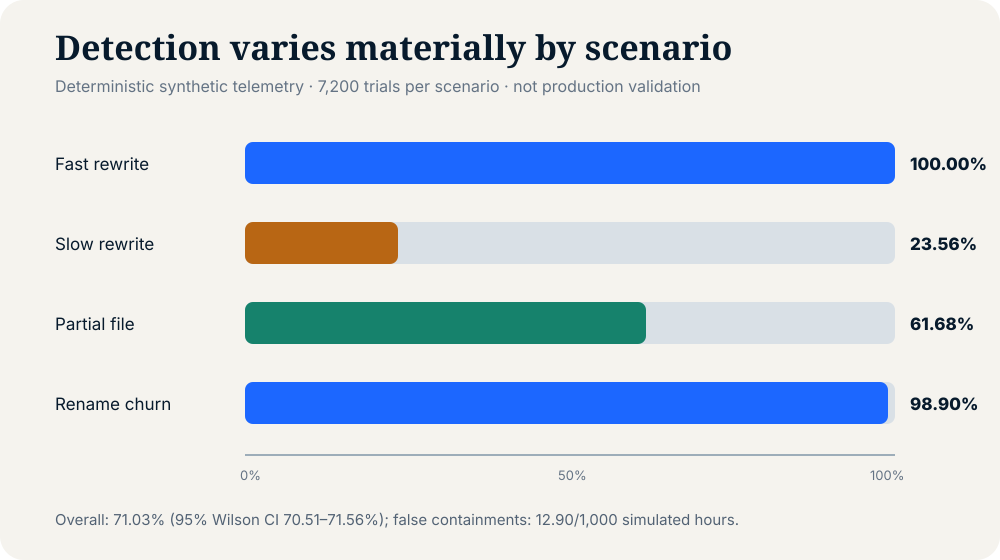

Observe
Collect block, file, object, namespace, and snapshot-delta signals.
STORAGE-CENTRIC RANSOMWARE RESILIENCE
A vendor-neutral closed-loop architecture connecting workload-aware anomaly scoring, reversible containment, immutable recovery points, and isolated validation.
CLOSED LOOP
Collect block, file, object, namespace, and snapshot-delta signals.
Compare each window with a workload-specific robust baseline.
Preserve evidence, narrow writes, and pause implicated replication.
Test a retained candidate in an independently controlled recovery zone.
EVIDENCE LEDGER
REPRODUCIBLE FINDINGS
Forty deterministic seeds span six workload profiles, six benign confounders, and 28,800 adversarial trials. Workload-specific thresholds are calibrated on data kept separate from test trials.

TRUST & PRIVACY BOUNDARY
The analytics plane cannot delete immutable recovery points. Production identities cannot administer the isolated validation zone. Promotion requires evidence and operator approval.